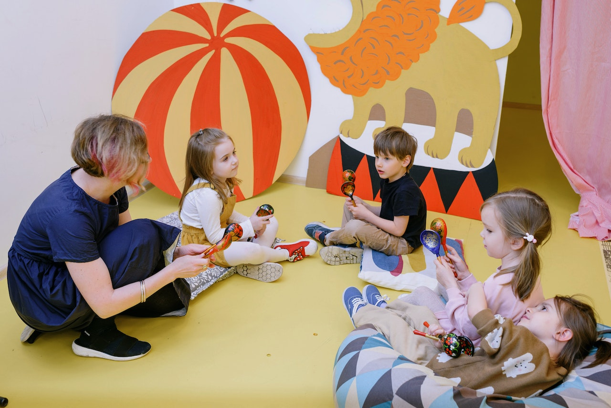
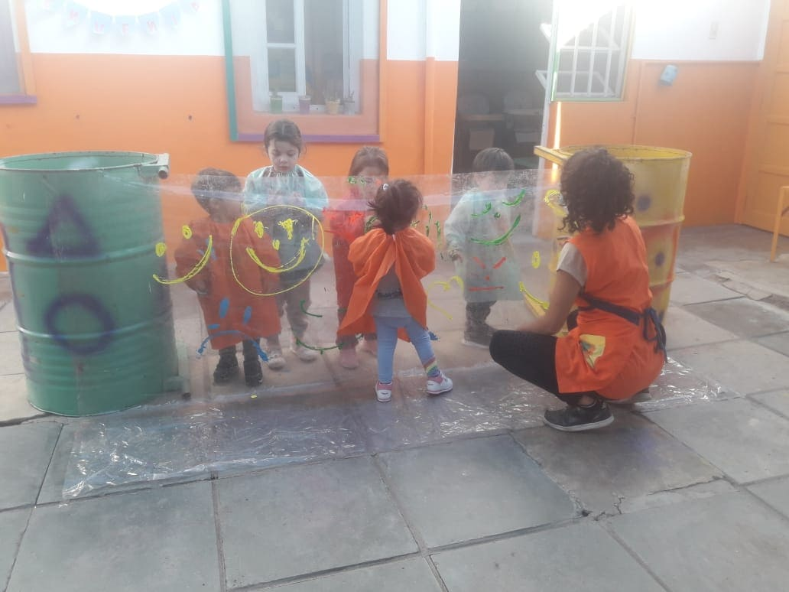
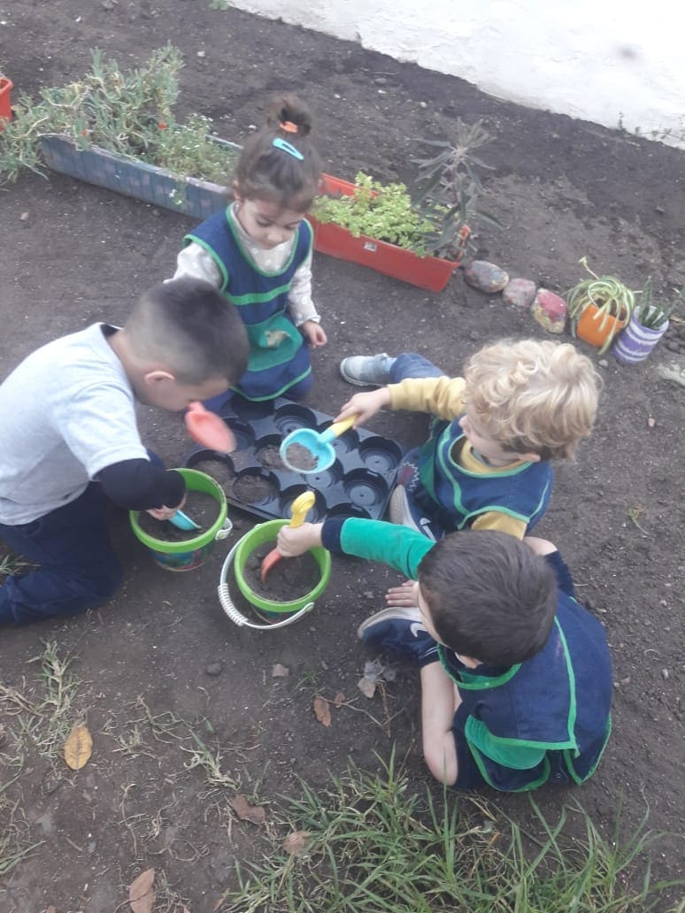
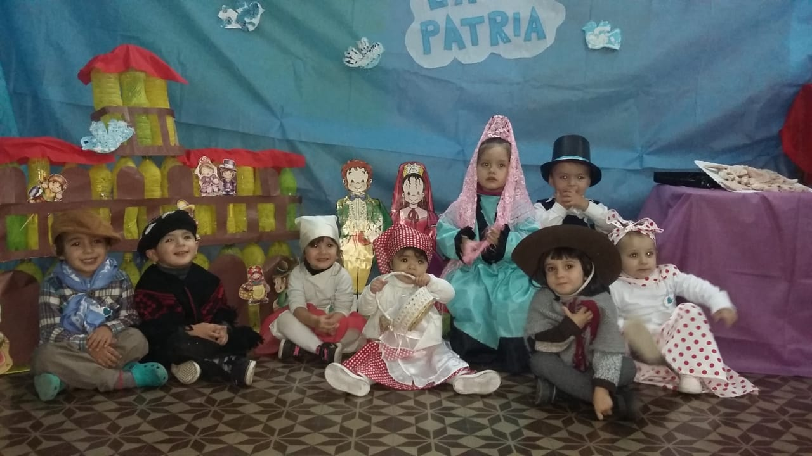
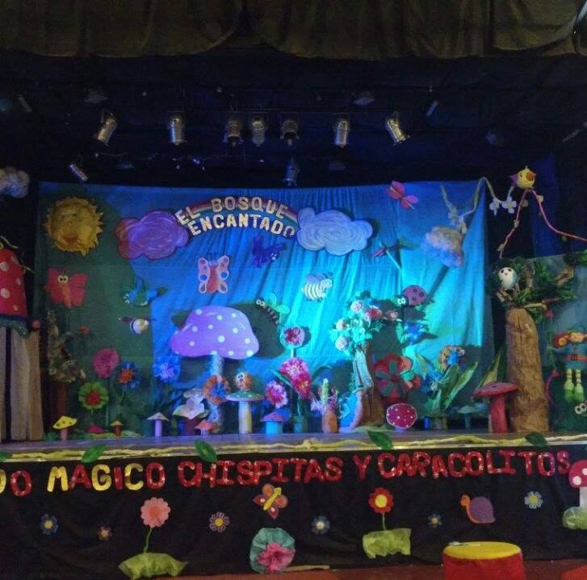

- Buenos Aires 234, Dean Funes, Cordoba.
- Horario Corrido de 7:30 a 20:30
- Bebes (45 dias a 1 año)
- Sala de 1 año
- Sala de 2 año
- Sala de 3 año
Donde Estamos?
Salas
Clases y Actividades Especiales
Musica
En nuestras clases de música, brindamos a los más pequeños la oportunidad de explorar y disfrutar de la magia de los sonidos y ritmos. A través de canciones, juegos y actividades interactivas, los niños se sumergen en un mundo de melodías y expresión creativa. Nuestros educadores musicales expertos les enseñan conceptos básicos como el ritmo, la melodía y la coordinación motora, despertando su interés y amor por la música desde temprana edad. En un ambiente divertido y estimulante, cada niño tiene la oportunidad de descubrir su propia voz y expresarse de manera única a través de la música. ¡Las clases de música en nuestro jardín maternal son un viaje encantador donde la diversión y el aprendizaje van de la mano!
Educacion Fisica
En nuestras clases de educación física, fomentamos el desarrollo integral de los niños a través del movimiento, el juego y la actividad física. Nuestro objetivo es promover hábitos saludables, estimular la coordinación motora y fortalecer la confianza en sí mismos. A través de juegos divertidos, circuitos de ejercicios y actividades al aire libre, los niños tienen la oportunidad de explorar su cuerpo, desarrollar su equilibrio y mejorar su condición física. Nuestros educadores físicos altamente capacitados crean un ambiente seguro y estimulante donde cada niño puede participar y disfrutar al máximo. En nuestras clases de educación física, la diversión está garantizada mientras los niños descubren el placer de moverse y mantenerse activos.

Taller de Arte
En nuestras clases de arte, invitamos a los niños a explorar su imaginación y creatividad a través de diversas formas de expresión artística. Nuestro objetivo es brindarles un espacio donde puedan experimentar, descubrir y desarrollar sus habilidades artísticas únicas. A través de pintura, dibujo, modelado y otras actividades artísticas, los niños tienen la oportunidad de explorar diferentes técnicas, colores y materiales. Nuestros educadores artísticos expertos les brindan orientación y apoyo, alentándolos a expresar sus emociones y contar sus propias historias a través del arte. Cada obra de arte se convierte en una expresión única de su mundo interior. En nuestras clases de arte, la imaginación se despierta, la confianza crece y los niños descubren el placer de crear algo hermoso con sus propias manos.
Taller de Huerta
En nuestro taller de huerta, invitamos a los niños a sumergirse en el fascinante mundo de la naturaleza y la agricultura. A través de actividades prácticas y educativas, les enseñamos sobre la importancia de cuidar el medio ambiente, cultivar alimentos saludables y conectarse con la tierra. En nuestro huerto, los niños aprenden a plantar semillas, cuidar las plantas, observar su crecimiento y cosechar los frutos de su trabajo. Nuestros educadores expertos les enseñan sobre los ciclos de vida de las plantas, la importancia del agua y el sol, y cómo respetar y valorar los recursos naturales. A través de esta experiencia, los niños desarrollan habilidades de responsabilidad, paciencia y conexión con la naturaleza, mientras disfrutan del orgullo de ver cómo sus esfuerzos dan vida a hermosas y saludables plantas. En nuestro taller de huerta, cultivamos no solo plantas, sino también valores de cuidado ambiental y una apreciación por los alimentos frescos y sostenibles.
Fechas Importantes
En nuestro jardín, celebramos con alegría y orgullo las fechas patrias que marcan la historia de nuestro país. Cada año, nos reunimos para conmemorar fechas importantes como el Día de la Independencia, recordando el valor y la valentía de aquellos que lucharon por nuestra libertad. A través de actividades, juegos y representaciones artísticas, enseñamos a los niños sobre los símbolos nacionales, las tradiciones y los valores que nos identifican como nación. Les transmitimos el amor por nuestra tierra, la importancia de la unidad y el respeto a nuestra diversidad cultural. En estas fechas patrias, nuestros niños aprenden a valorar y honrar el legado de nuestros antepasados, promoviendo un sentido de identidad y pertenencia que perdurará en sus corazones a lo largo de sus vidas.
Fiestas y Actos
Cada año, nuestros talentosos niños del jardín maternal se preparan para una mágica fiesta de fin de año que culmina con una emocionante obra teatral. Con entusiasmo y dedicación, los pequeños artistas se sumergen en la creación de personajes, ensayos y la construcción de escenarios coloridos. La obra, llena de risas, canciones y mensajes de amistad, es el resultado de su arduo trabajo y creatividad. Además de la emocionante obra teatral, nuestra fiesta de fin de año también es un momento especial para reconocer y honrar a nuestros queridos egresados. En un solemne momento de la velada, se lleva a cabo la ceremonia de entrega de diplomas, donde cada niño recibe un reconocimiento por completar exitosamente su etapa en el jardín maternal.
